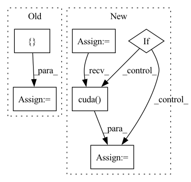

Pattern ID :23903
Before Change
m_parameter = torch.Tensor([0]).cuda()
else:
m_parameter = torch.Tensor([ 0After Change
Squash model parameters or gradients into a single tensor.
parameters = [param.data.view(-1) for param in model.parameters()
] // vectorize each model parameter
m_parameters = torch.cat(parameters)
if cuda:
m_parameters = m_parameters.cuda()
return m_parameters
In pattern: SUPERPATTERN
Frequency: 3
Non-data size: 6
Instances Fragment ID: 74417879
Project Name: smilelab-fl/fedlab
Commit Name: 12925dd3ac83f8a9e1fbd4ed32fb3ec602217a77
Time: 2021-04-09
Author: 928255708@qq.com
File Name: fedlab_core/utils/serialization.py
M Class Name: AnonimousClass
N Class Name: AnonimousClass
M Method Name: ravel_model_params(2)
N Method Name: ravel_model_params(2)
M Parent Class:
N Parent Class:
M File Name: fedlab_core/utils/serialization.py
N File Name: fedlab_core/utils/serialization.py
M Start Line: 10
M End Line: 19
N Start Line: 8
N End Line: 15
Before Change
self.layer_count = layer_count
self.sample_token_count = sample_token_count
self.start_token = torch.tensor([start_token]).to(torch.long)
self.pad_token = torch.tensor([ 1After Change
embed_count // attention_head_count
)
self.zero_prob = torch.zeros([1])
self.token_indices = torch.arange(self.sample_token_count)
self.start_token = torch.tensor([start_token]).to(torch.long)
if torch.cuda.is_available():
self.zero_prob = self.zero_prob.cuda()
self.token_indices = self.token_indices.cuda()
self.start_token = self.start_token.cuda()
def decode_step(self, Fragment ID: 74417878
Project Name: kuprel/min-dalle
Commit Name: 17c96fe110fad3d48ea591dcd46475f521499770
Time: 2022-06-28
Author: brkuprel@gmail.com
File Name: min_dalle/models/dalle_bart_decoder_torch.py
M Class Name: DalleBartDecoderTorch
N Class Name: DalleBartDecoderTorch
M Method Name: __init__(11)
N Method Name: __init__(11)
M Parent Class: nn.Module
N Parent Class: nn.Module
M File Name: min_dalle/models/dalle_bart_decoder_torch.py
N File Name: min_dalle/models/dalle_bart_decoder_torch.py
M Start Line: 127
M End Line: 129
N Start Line: 129
N End Line: 161
Before Change
prediction = cv2.imread(fake_image)
target = cv2.imread(real_image)
error_value = []
for i in range(len(target)):
error_value.append((target[i] - prediction[i]) ** 2)
mse = sum(error_value) / len(error_value)
if mse < 1.0e-10:
return 100After Change
psnr = 10 * math.log10(255.0 ** 2 / mse)
(_, channel, _, _) = img1.size()
window = create_window(window_size, channel)
if img1.is_cuda:
window = window.cuda( img1.get_device())
window = window.type_as(img1)
ssim = _ssim(img1, img2, window, window_size, channel, size_average)
Fragment ID: 74417877
Project Name: lornatang/srgan-pytorch
Commit Name: cb04075c03b2a9f9b49c1e6d6edb8de1f6647249
Time: 2020-09-01
Author: liuchangyu1111@gmail.com
File Name: srgan_pytorch/utils.py
M Class Name: AnonimousClass
N Class Name: AnonimousClass
M Method Name: evaluate_performance(4)
N Method Name: evaluate_performance(2)
M Parent Class:
N Parent Class:
M File Name: srgan_pytorch/utils.py
N File Name: srgan_pytorch/utils.py
M Start Line: 31
M End Line: 45
N Start Line: 34
N End Line: 47